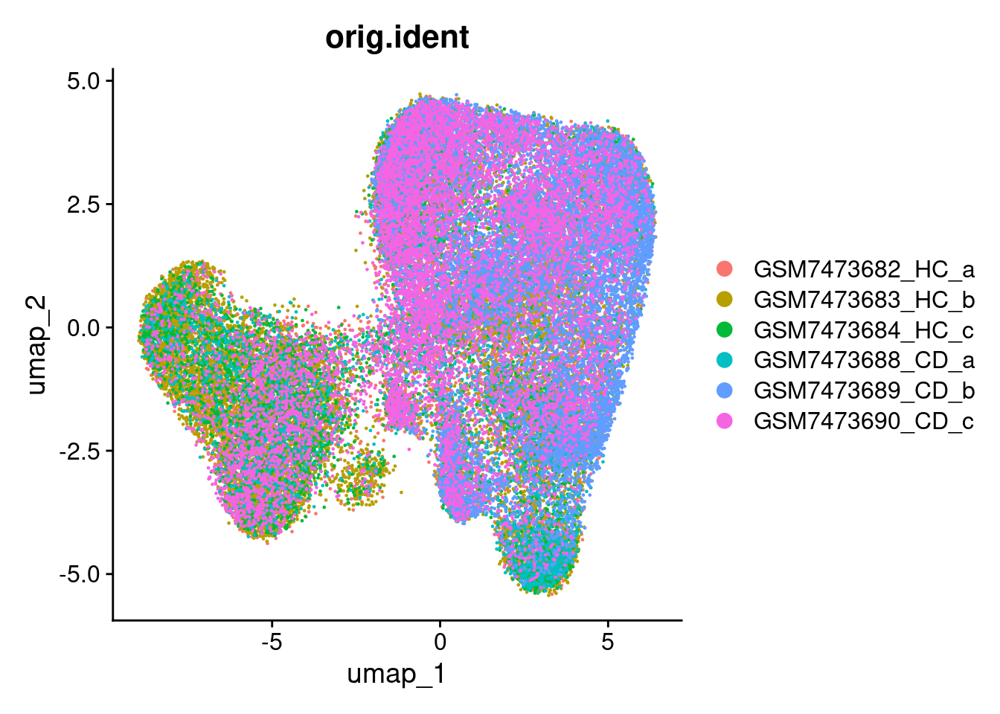

10 Batch Correction
There are regions where the UMAP sees separation by
DimPlot(so, group.by='tissue_sample')
so <- FindNeighbors(so, dims = 1:num_dims)## Computing nearest neighbor graph## Computing SNN
so <- FindClusters(so) ## Modularity Optimizer version 1.3.0 by Ludo Waltman and Nees Jan van Eck
##
## Number of nodes: 50662
## Number of edges: 1265113
##
## Running Louvain algorithm...
## Maximum modularity in 10 random starts: 0.8339
## Number of communities: 15
## Elapsed time: 32 seconds
DimPlot(so, group.by='seurat_clusters')
so <- FindClusters(so, resolution = 0.2) ## Modularity Optimizer version 1.3.0 by Ludo Waltman and Nees Jan van Eck
##
## Number of nodes: 50662
## Number of edges: 1265113
##
## Running Louvain algorithm...
## Maximum modularity in 10 random starts: 0.9068
## Number of communities: 6
## Elapsed time: 35 seconds
DimPlot(so, group.by='seurat_clusters')
table(so$orig.ident, so$seurat_clusters)##
## 0 1 2 3 4 5
## GSM7473682_HC_a 1519 1980 1556 367 1159 162
## GSM7473683_HC_b 1814 5772 3102 612 2337 136
## GSM7473684_HC_c 1099 2132 1260 310 117 54
## GSM7473688_CD_a 876 1277 1587 156 84 30
## GSM7473689_CD_b 3961 0 1047 6464 852 110
## GSM7473690_CD_c 5284 1577 902 297 512 158We can apply batch correction
This is a step that takes some time to run. Do not run the code below;
# https://satijalab.org/seurat/articles/seurat5_integration
# Slow?
so <- IntegrateLayers(so, method = HarmonyIntegration, orig.reduction = "pca", new.reduction = "harmony")
so <- RunUMAP(so, dims=1:num_dims, reduction = 'harmony')
DimPlot(so, group.by='tissue_sample')
so <- FindNeighbors(so, reduction = "harmony", dims = 1:num_dims)
so <- FindClusters(so, resolution = 0.2)
# don't talk about optimisation of clusters, point people at single cell resources.
}Instead, load up a version of the object with theis data.
## here() starts at /home/s.williams/projects/intro-spatial-transcriptomics-workshop
seurat_file_01_preprocessed_subset <- here("data", "GSE234713_CosMx_IBD_seurat_01_preprocessed_subsampled.RDS")
so <- readRDS(seurat_file_01_preprocessed_subset)
DimPlot(so, group.by='seurat_clusters')
DimPlot(so, group.by='orig.ident')